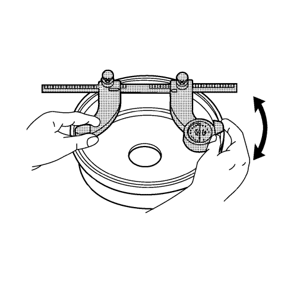
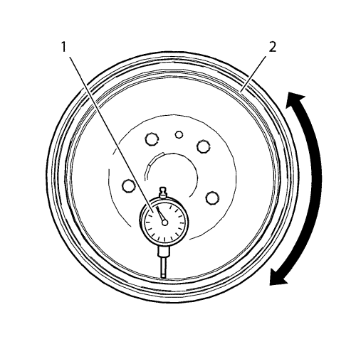

Inspección de la superficie y desgaste del tambor del freno
Herramientas especiales
CH-8001 Juego de indicador de cuadrante
Si desea informarse sobre herramientas regionales equivalentes, consultar Herramientas especiales .
Advertencia: Consulte Advertencia relacionada con el polvo procedente de los frenos en la sección Prólogo
- Con el tambor de freno desmontado, limpie la superficie de contacto del tambor de freno con el revestimiento de la zapata de freno, con alcohol desnaturalizado o con un limpiador de frenos similar homologado.
- Inspeccione la superficie de freno del tambor de freno para comprobar las siguientes condiciones de la superficie de freno:
| • | Óxido o picadura fuerte |
| | Se puede retirar óxido ligero en la superficie con un disco abrasivo, el óxido más extendido y/o picaduras se deben retirar repasando el tambor. |
| • | Grietas o puntos calientes |
| • | Excesiva decoloración azulada |
| • | Faltan pesos de equilibrado |
- Si la superficie de frenado del tambor de freno presenta una o más de las anomalías mencionadas, es necesario repasar o sustituir el tambor.

- Usando un micrómetro para tambor de freno calibrado en milésimas de pulgada, mida y registre cualquier surco que haya en la superficie de frenado del tambor.
Asegúrese de que sólo se toman medidas en el área de contacto del revestimiento de la zapata de freno.
- Compare la profundidad de los surcos o arañazos detectados, con las siguientes especificaciones:
Especificaciones
Profundidad máxima permitida para los arañazos en el tambor de freno: 0,50 mm (0,020 pulg.).
- Si la profundidad de estrías del tambor de freno excede las especificaciones, o si hay una cantidad excesiva de estrías, habrá que repasar o sustituir el tambor.
- Monte el tambor de freno en un torno de freno.

- Monte un indicador de cuadrante, el indicador CH-8001 (1), o similar, y coloque el palpador del indicador de manera que toque la superficie de frenado del tambor de freno (2) en ángulo de 90 grados, a unos 19 mm (0,75 pulg.) del borde exterior del tambor.
- Mida y registre la excentricidad del tambor de freno.
| 9.1. | Gire el tambor hasta que se muestre la lectura más baja en el dispositivo de medición y luego ponga el disco a cero. |
| 9.2. | Gire el tambor hasta que se muestre la lectura más alta en el dispositivo. |
- Compare el alabeo radial del tambor de freno, con las siguientes especificaciones:
Especificaciones
Alabeo radial máximo permitido en el tambor de freno: 0,03 mm (0,001 pulg.)
- Si la excentricidad del tambor de freno excede la especificación, se tiene que repasar o sustituir el tambor.
| © Copyright Chevrolet Europe. Reservados todos los derechos |